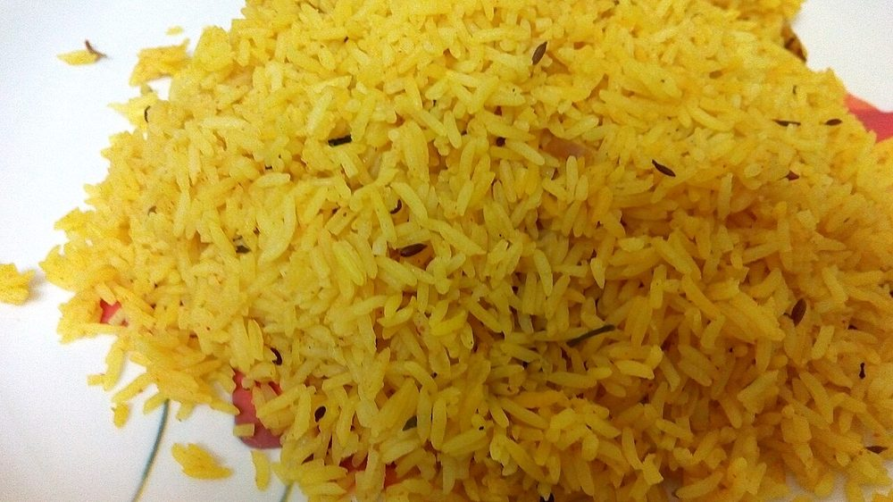

Goan Sausage Pulao
smoky vinegary chouriço cooked through rice until every grain is stained red

Allergens: none of the ten listed below
Ingredients
Quantities for 4.
- 300g Goan chouriço sausage, casings removed and chopped Porkor 300g diced pork belly tossed with 2 tbsp vinegar, 1 tsp chilli powder and 1 tsp crushed garlic
- 2 cups, rinsed until the water runs clear Basmati Rice
- 2 medium, finely sliced Onion
- 2, chopped Tomato
- 2 medium, in 2cm cubes Potatothe traditional filler, soaks up the fatoptional
- 3, slit Green Chillioptional
- 2 Bay Leaf
- 4 Cloves
- 3cm stick Cinnamon
- 1/2 tsp, crushed Black Pepper
- 1/2 tsp Turmericoptional
- a handful, chopped Coriander Leavesoptional
- 1, in wedges Lemonoptional
- 3.5 cups Water
- to taste Saltchouriço is already salty. Salt at the end
Cookware
stovetop
Checked against the ingredient list for ten allergens: milk, egg, fish, crustaceans, tree nuts, peanuts, sesame, mustard, soy and gluten. Brands vary, so read the label on anything new to you.
Before you start
- Soak the rinsed rice 20 minutes and drain it well. Wet rice and a fatty sausage together give you a sticky pulao.
- Goan chouriço is cured and heavily salted. Taste a piece once fried before you add any salt at all.
- If your sausage is very lean, keep 1 tbsp oil to hand; if it is fatty you will need none.
Method
- Fry the chopped sausage in a dry heavy pot over medium heat for 6-8 minutes, until the fat runs out red and the edges crisp.That rendered red fat is the entire flavour base. Do not drain it away.
- Lift out the sausage with a slotted spoon, leaving the fat behind.
- In the same fat, fry the bay leaves, cloves and cinnamon for 30 seconds until fragrant.
- Add the sliced onion and cook 8 minutes, until deep gold.
- Stir in the tomato, green chillies, pepper and turmeric and cook 4 minutes, until the tomato collapses.
- Add the potato cubes and the drained rice and turn them through the fat for 2 minutes, until every grain is coated and glossy.Turn with a folding motion, not a stir. Broken grains make mush.
- Return the sausage, pour in the water, taste for salt and bring to a hard boil.
- Cover tightly, drop to the lowest heat and cook 12 minutes without lifting the lid.
- Rest off the heat, still covered, for 10 minutes, then fork through the coriander and serve with lemon.The rest is what separates the grains. Opening the pot early undoes it.
Safe temperatures: Whole cuts of mutton, beef and pork are done at 63°C / 145°F, rested 3 minutes. A long braise passes that well before the meat is tender. Reheat leftovers to 74°C / 165°F. FoodSafety.gov
Storage
Keeps 2 days refrigerated. Reheat covered with 2 tbsp water over low heat or steam it for 5 minutes; the fat re-melts and it comes back well.
Nutrition Low estimate
High protein: 26 g a serving, 19% of the calories
| Per serving585 g | Per 100 g | |
|---|---|---|
| Calories | 548 kcal | 94 kcal |
| Protein | 25.7 g | 4 g |
| Carbohydrate | 97.5 g | 17 g |
| of which sugars | 5.0 g | 1 g |
| Fibre | 5.0 g | 1 g |
| Fat | 5.2 g | 1 g |
| of which saturated | 1.7 g | 0 g |
| of which unsaturated | 2.8 g | 0 g |
Ingredients given to taste count as zero, so the real figures run a little higher. Estimated from raw ingredients using USDA FoodData Central.
More like this: Healthy Indian recipes · Gluten-free Indian recipes · Dairy-free Indian recipes · Goan recipes
Times, yields, allergens and nutrition are guidance. Use your own judgement on doneness and on storing. More in About.